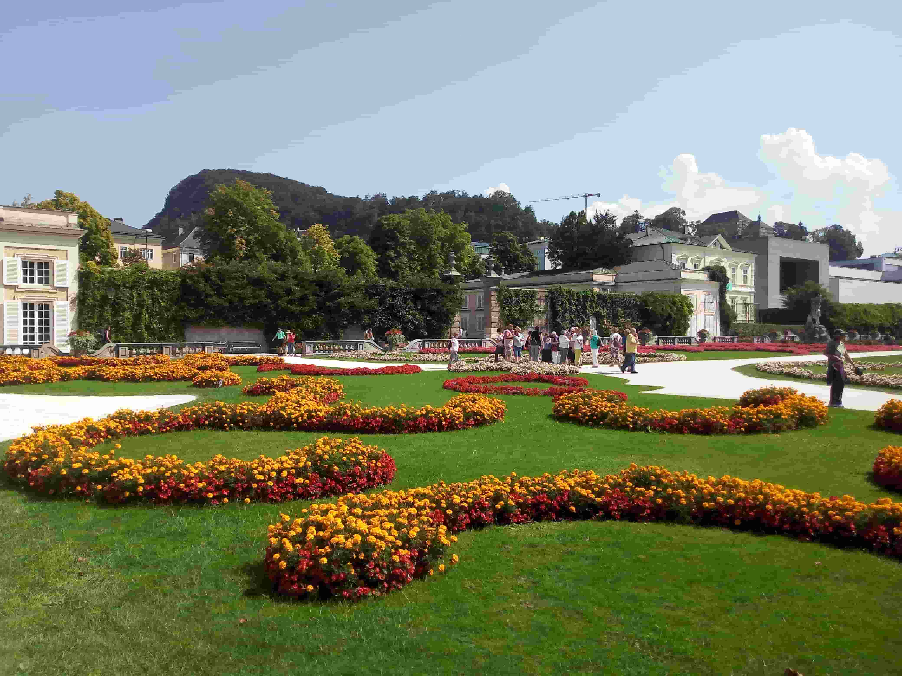

Mirabell Gardens
Salzburg, Austria
Mirabell Gardens is one of Salzburg's best-known historic gardens, featuring carefully arranged flower beds, elegant pathways, sculptures, and views of the surrounding city. These photographs preserve my personal travel memories of this beautiful place.
My Photo Gallery
Explore my personal photographs of Mirabell Gardens.
View All Photos ↗